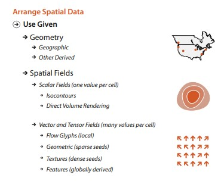

Chart types
9b-1: Spatial / Geospatial data
Recap: How to design viz idioms

Recap: Data Types
- Tabular data
- Networks
- Geographic / spatial
- Fields
- Hierarchical
Spatial
Geospatial data
GeoJSON / TopoJSON (GeoJSON spec) (TopoJSON spec)
There are a ton of GIS file formats.
D3 Graph Gallery

D3 Graph Gallery, by Yan Holtz
Geospatial (2D)
Libraries
Map Tiles
Geospatial (2D)
Tools
Platforms
Carto (formerly cartoDB)
ArcGIS, Esri
Geospatial (3D)
Mapbox, MapboxGL
Idiom: Map Markers (e.g. Leaflet)
What: Data |
Geographic geometry data. Points, polygons, etc. Additional qualitative / quantitative fields. |
How: Encoding |
Area and point marks on a geographic map. Often allows for zoom, pan and rotate functions. |
Why: Task |
Task: Lookup, compare values, find spatial trends |
| Scale | Color channel: If quantitative up to 8, if categorical up to 12. |
Idiom: Choropleth Map
What: Data |
Geographic geometry data. Table with one quantitative attribute per region |
How: Encoding |
Space: use given geometry for area mark boundaries. Color: sequential (or divergent) segmented colormap |
Why: Task |
Task: Lookup, compare values, find spatial trends |
| Scale | Color channel: If quantitative up to 8, if categorical up to 12. |
D3 Graph Gallery - Choropleth Map
Idiom: Hexbin Maps
What: Data |
Geographic data: lat/lon points, quantitative count attribute. |
How: Encoding |
Encode Use given geographic data geometry of points, overlay on hexbin map depening on zoom value. |
Why: Task |
Task: Find spatial trends, esp at different zoom values |
| Scale | Color channel: Quantitative (up to 8) |
D3 Graph Gallery - Hexbin Charts
Leaflet + D3.js, Tom Nightingale
SG Taxi Availbility, Yong Quan (repo)
Idiom: Tile cartograms
What: Data |
Typically districts or states in a country |
How: Encoding |
Convert districts/states into boxes and lay them out in the rough shape of the country. |
Why: Task |
Use geography as a layout so we can quickly zoom into the district/state. |
| Scale | Color channel: Quantitative (up to 8) |
Idiom: Iscocontours
What: Data |
2D spatial field; geographic data. Derived Geometry: set of isolines computed from field. |
How: Encoding |
Encode Use given geographic data geometry of points, lines, and region marks. Use derived geometry as line marks. |
Why: Task |
Task: Get a sense of spatial shape |
| Scale | Dozens of contour levels. |
Idiom: Vector Fields
What: Data |
2D spatial field: geographic data. Each grid square - vector values (e.g. wind speeds, u and v) |
How: Encoding |
Encode vectors as arrow marks on a 2D spatial field |
Why: Task |
Task: Get a holistic sense of both direction and maginitude of the vectors. (e.g. wind speed and direction) |
| Scale | Hundreds of thousands of marks. |
3D Volume Rendering
What: Data |
3D spatial field |
How: Encoding |
A model of how light rays are absorbed, emitted, and scattered by the medium. |
Why: Task |
Task: Find anomalies, inspect 3D structure |
Volume Rendering in webgl, Will Usher
For 3D scientific viz, probably good to work with a 3D library, like three.js
3D Viz (examples)
One Map 3D, SLA Singapore, (Cesium - I think)
National Map Australia, (Cesium)
Urban City Visualization, (three.js)
Questions?
Chi-Loong | V/R